My flower press ♡
A little collection of flowers I love, petals I’d keep forever, and things that are prettier than they strictly need to be.
I’ve always loved flowers that feel soft, delicate, dreamy, or a little dramatic. If it’s purple, trailing, romantic, or slightly magical-looking, there’s a very good chance I already adore it.
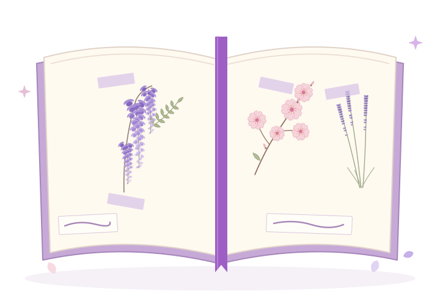
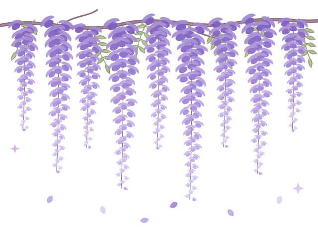
My signature flower ♡
Wisteria
If a flower could quietly take over my whole website, it would probably be wisteria. Soft purple, trailing, dreamy, and just a little magical. It’s exactly the sort of flower I can’t stop loving.
- dreamy
- trailing
- soft purple
- a little magical
- deep violet
- lavender
- pale lilac
- soft leaf green
Honestly unfairly pretty.
I’ve already tucked it around my illustrated bedroom window. Cherry blossoms are right beside it on my favorites list; wisteria gets this page all to itself.
Flowers I keep choosing ♡
Eight favorites, each one a different little piece of me.
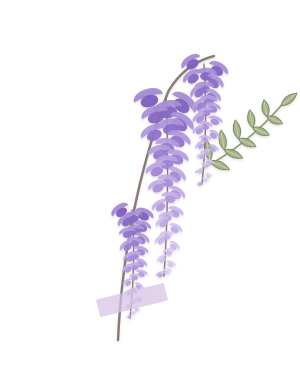
No. 01Wisteria
my flowerThe one I always come back to.
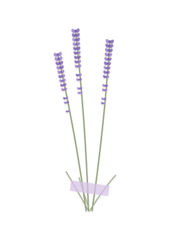
No. 02Lavender
calm favoriteSoft, soothing, and impossible for me not to love.
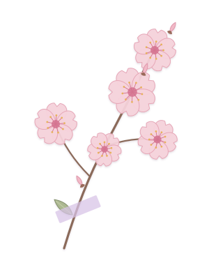
No. 03Cherry Blossom
romanticDelicate enough to feel almost unfairly pretty.
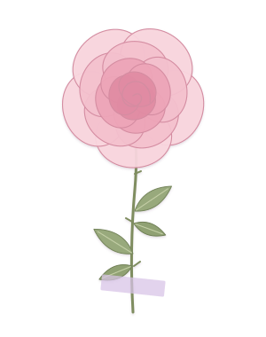
No. 04Pink Rose
soft and lovelySweet, classic, and exactly the sort of flower that never really goes out of style.
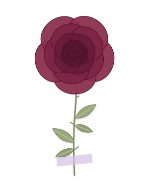
No. 05Burgundy Rose
dramatic favoriteA flower with a little attitude. Much more my style than a plain red rose.
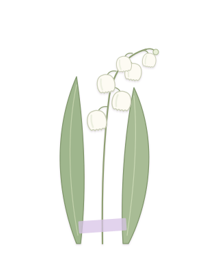
No. 06Lily of the Valley
tiny and perfectTiny white bell-shaped flowers. That’s almost suspiciously adorable.
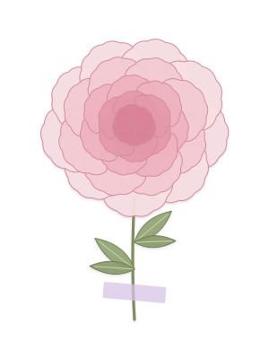
No. 07Peony
full and feminineThe sort of flower that looks like it knows it’s beautiful.
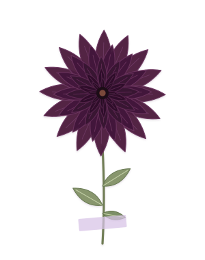
No. 08Dark Dahlia
moody beautyProof that flowers don’t need to be pale pink to be gorgeous.
If my mood were a flower…
I keep a flower for my soft days and one for my dramatic days, too.
Soft and romantic
Cherry Blossom
Pale pink, a little fleeting, and impossible not to stop and stare at.
see it pressed ↑Dreamy and delicate
Lily of the Valley
Tiny bells that look like they belong in a fairy tale.
see it pressed ↑Dark and dramatic
Dark Dahlia
Deep plum petals and a lot of attitude. The burgundy rose is a close second.
see it pressed ↑Most like me
Wisteria
Soft, purple, elegant, and a little dramatic in the prettiest way.
see my flower ↑
Little flower thoughts ♡
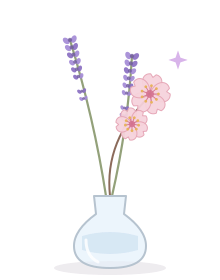
- Purple flowers always win.
- I love flowers that look delicate and dreamy.
- I think wisteria is unfairly pretty.
- Dark flowers deserve more appreciation.
- If I could decorate half my life with petals, I probably would.
- Some flowers feel soft. Some feel dramatic. I like both.
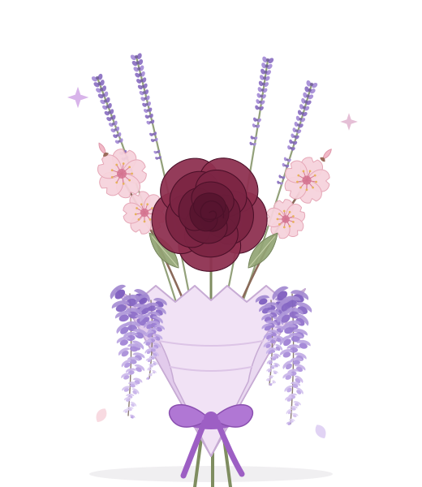
If my world were a bouquet ♡
- wisteria
- lavender
- cherry blossom
- a burgundy rose
Soft, purple, a little romantic, and slightly dramatic. Which, to be fair, is more or less the entire website.